Fachportal Kunst
Beschreibung des Profils
DER KUNSTUNTERRICHT
Im Fach Kunst können Schülerinnen und Schüler Kompetenzen aufbauen, die durch selbstbestimmtes Handeln und anschauliches Denken geprägt sind und dadurch einen besonders nachhaltigen Lernprozess ermöglichen, der zu ganzheitlichem Erleben und Verstehen der Wirklichkeit führt. Dies ist bedeutsam in Bezug auf die zunehmende Ästhetisierung und Virtualisierung von Wirklichkeit durch elektronische Bildmedien. Durch die Stärkung der Ich-Identität im Gefüge sozialer Beziehungen ermöglicht das Fach Kunst, sich in der Welt zu behaupten und diese als gestaltbar und veränderbar zu begreifen. Dazu gehören im Sinne eines künstlerisch geprägten Prozesses die Bereitschaft zum Experiment und der Mut zum Risiko, die Bewusstwerdung der Vielfältigkeit von Lösungs- und Deutungsmöglichkeiten und die Entwicklung der Fähigkeit zum vernetzten Denken.
Das Profilprojekt WERKSTATT KUNST
Im Profilprojekt möchten wir kunstinteressierten Schülerinnen und Schülern die Möglichkeit bieten, Spaß und Freude am kreativen Gestalten weiter auszubauen und ihre Fähigkeiten vertiefen. Das gemeinsame ausgeprägte Interesse der Schülerinnen und Schüler an künstlerischer Arbeit ermöglicht es uns, individuelle Entwicklung zu begleiten und Talente zu fördern.
Die Profile werden am Grabbe in besonderer Weise betont und gestärkt, indem wir in den Klassen 5 und 6 je eine Profilstunde neben dem für alle Gymnasien obligatorischen Fächerangebot im normalen Stundenplan verankern.
Das Profilprojekt Werkstatt Kunst bietet eine Erweiterung und Vertiefung des an den Kernlehrplänen orientierten zweistündigen Kunstunterrichts als zusätzlichen Freiraum, in dem die Schüler und Schülerinnen ohne Notendruck projektbezogen arbeiten können.
Das künstlerische Profil des Grabbe-Gymnasium wird durch ständig wechselnde Ausstellungen in den Räumlichkeiten der Schulgebäude; so im Altbau, im Foyer im Neubau, in der Wintergalerie, im Treppenaufgang zum Erweiterungsbau das gesamte Schuljahr hindurch sichtbar.
Weiterhin präsentieren sich Klassen, Kurse und zusätzlich engagierte Schülerinnen und Schüler durch vielfältige Ausstellungen, oder bei Wettbewerbsbeteiligungen in der Öffentlichkeit, sowie bei Projekten oder Wandgestaltungen in Detmold.
Schulische Bildung, Selbstständigkeit, Leistungsfähigkeit und Öffnung von Schule werden so sinnvoll miteinander verknüpft. Dies wird in unserer Schule und somit auch im Unterricht angestrebt und gewährleistet durch:
- Die Einrichtung des Profilprojektes in der Klasse 5 und Klasse 6
- Die Durchgängigkeit des Kunstunterrichts in der Sek.I (Sek.II)
- Das Angebot eines Wahlpflichtkurses "Kunst und Design" in den Klassen 9 und 10
- Die Einrichtung des Leistungskurses Kunst in der Oberstufe
- Gemeinsame Museumsbesuche an den Wandertagen und entsprechende Programmpunkte auf den Klassenfahrten
- Offene AG-Angebote, z.B. die Comic AG, das "Kunst-Labor"und die "Holzwerkstatt"
- Die Kooperation mit Künstlern und außerschulischen Partnern (z.B. Wortmann): Atelierbesuche, Ateliergespräche und Workshops
Gestalterisch begabten und kreativ engagierten Schülerinnen und Schülern wird durch dieses breite Spektrum an Möglichkeiten im Profil Kunst eine sehr gute Chance geboten, sich mit ihrer Schule als Lernort zu identifizieren.
Kontakt
Fachvorsitzende: Yvonne Walter
Stellvertretende Fachvorsitzende: Annegret Niehus-Berkemann
Sammlungsleitungen: Yvonne Walter und Annegret Niehus-Berkemann
Profil Kunst: Annegret Niehus-Berkemann
Aktuelles
Design-Award 2025
Gemeinsam mit Lennart Schorat und Annica Dreier von der Firma Wortmann (Schuh Holding KG) startete der Wahlpflichtkurs "Kunst &Design" der 10. Klassen, unter der Leitung von Frau Walter, am 26.03.2025 in den kreativen Schuh-Wettbewerb. Nach einem informativen Vortrag über das Berufsfeld des Produktmanagers und mögliche Schülerpraktika, geht es nun darum eigene Schuhe zu entwerfen, die anschließend von einer Jury der Firma Wortmann begutachtet und prämiert werden sollen. Wir sind sehr gespannt auf die Ergebnisse und freuen uns, dass mit diesem Award die Kooperation mit der Firma Wortmann weiter vertieft wird.
.jpg)
Auch für das Jahr 2025 gab es wieder Kalender!
Für unseren "Winterzauber"-Markt (17.12.24 ab 17.00 Uhr) stellte die Klasse 5K in der "Projekt-Werkstatt Kunst" wieder einige Kalender für das Jahr 2025 her, die als Original erworben werden konnten. In diesem Jahr griff die Klasse 5k zu Klebstoff und Schere und fertigte farbige Collagen an. Hier gibt es ein paar der Collagen zu sehen:
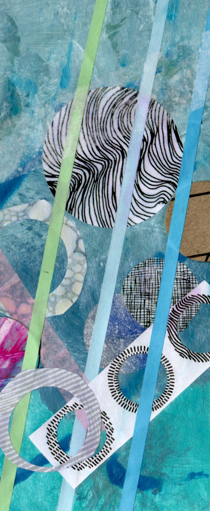
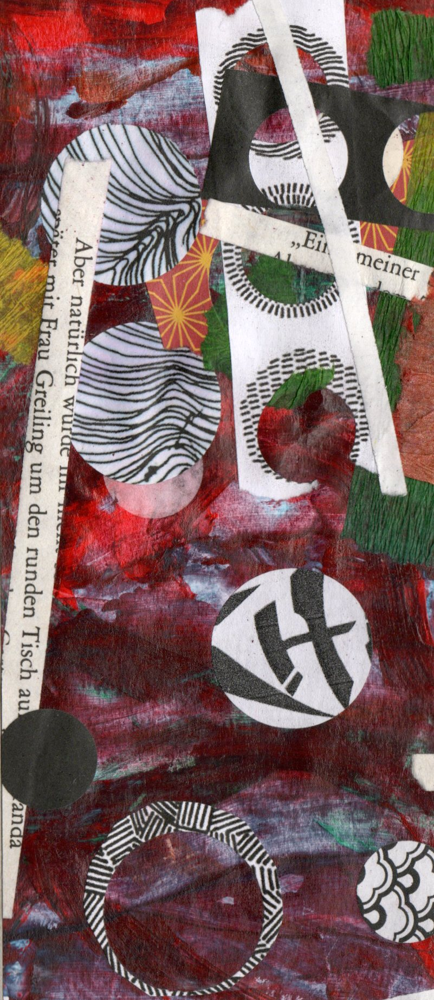
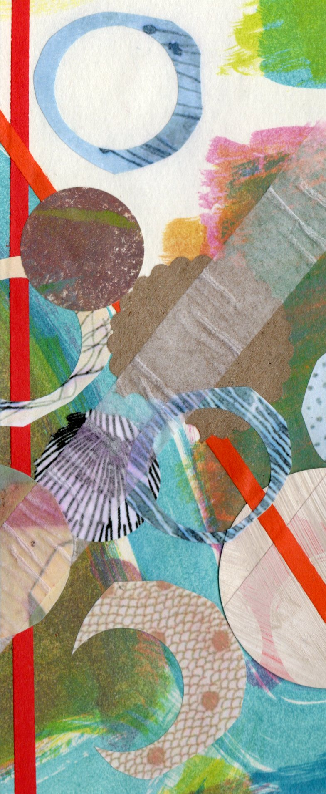
Im letzten Jahr hatte die jetzige Klasse 7k gedruckt. Hier sind zwei Beispiele zu sehen:
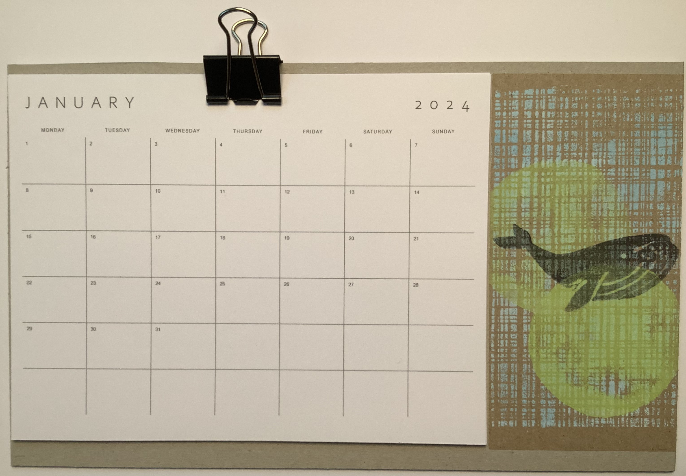
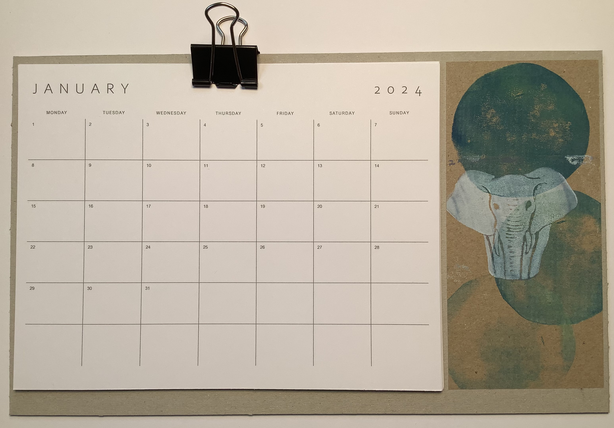
Wer einen im letzten Jahr erworbenen Kalender mit den Druckmotiven weiterhin für das Jahr 2025 nutzen möchte, wird auf dem Winterzauber-Markt in diesem Jahr auch das Kalendarium 2025 zum Austauschen finden.
Hier folgt der Auszug aus den Nachrichten mit Suchbegriff "@Kunst":
Ausstellungen
Die Ordnung meiner Welt
Online-Ausstellung der praktischen Arbeiten des Q1 Grundkurses Kunst
Wiederholung lautet das Motto dieses fotografischen Alltags-Stilllebens. Algorythmen, hier symbolisiert mit der Farbe Gelb, gehören zum Alltag dazu, machen ihn möglicherweise sogar wesentlich aus. Perspektive, Belichtung und Schattierungen bewahren das Einzelmotiv jedoch davor, sich im Seriellen bedeutungslos aufzulösen. Andererseits erhält so ein Quietsche-Entchen eine interessante Bedeutung gerade im Ensemble von ansonsten kaum beachteten Alltagsobjekten.
Von Elisabeth Hecker
Die Aufgabe für den Q1 Grundkurs (2019/20) im Fach Kunst war es, eine fotografische Bildersammlung über einen längeren Zeitraum zum Thema „Die Ordnung meiner Welt“ zu erstellen. Dabei sollten die Einzelbilder anschließend thematisch geordnet werden, sodass über Konstellationen und Nachbarschaften Bezüge und Ähnlichkeiten entstanden, die es dem Betrachter nun ermöglichen diese nachzuvollziehen und zu vergleichen.
Thematisch kreisen viele Serien der Schülerinnen und Schüler in der ein oder anderen Art und Weise um die Natur. Sie setzen sich dort mit deren zeitlicher Veränderung, wie Wachstum, Tag und Nacht, Hell und Dunkel und den farblichen Eigenheiten auseinander. Darüber hinaus gibt es fotografische Reisen durch die Garage oder über den Heuboden der Familie. Stets ist es auch das noch so kleinste Detail aus der Umgebung, welches sichtbar gemacht wird.
Des Weiteren ist auch immer wieder die äußerst sensible Wahrnehmung der Schülerinnen und Schüler betreffend ihres Umfeldes zu erkennen. Sei es die Farbe Gelb, ein umfassendes Porträt des Hobbys oder gar optische Täuschungen - die Schülerinnen und Schüler präsentieren uns hier mit ihren Werken eine Bandbreite von fotografischer Dokumentationen bis hin zu Suggestionen, von Aktuellem bis hin zu Alltäglichem, von feinen Differenzen und groben Unterschieden und stets mit hoher Bedeutsamkeit für sie selbst - eine Ordnung ihrer Welt.

Wettbewerbe
2015

Create A Shoe
Mira Middeldorf gewinnt beim Wortmann-Wettbewerb
Von Beate Schalk (Text) und Aila Amiryan (Fotos)
Am 31. August war der Abgabetermin für den Wortmann-Wettbewerb (siehe weiter unten). Die Wettbewerbsbeiträge der Schülerinnen Mira Middeldorf (EF, 2.v. l), Katja Hagspiel (Q1, 2.v.r.) und Aila Amiryan (9, links) konnten die Produktmanager und Designer begeistern. Ihre kreativen Ideen und aufwendigen Designs wurden gelobt und mit Preisen ausgezeichnet.
Herr Klapproth überreichte die Preise am Mittwoch (30.09.2015) den Schülerinnen, wobei der erste Preis an Mira Middeldorf, der 2. Preis an Katja Hagspiel und der 3. Preis an Aila Amiryan ging. Die drei Siegerinnen freuten sich sehr über die Gutscheine von Wortmann.

Berufsorientierung im Leistungskurs Kunst
Von Beate Schalk (Text) & Maren Bunte (Foto)
Zum dritten Mal konnte ein Leistungskurs Kunst von der Kooperation mit Wortmann profitieren. In diesem Jahr war der Leistungskurs von Herrn Jerusalem zu Besuch bei Wortmann. Wie immer wurden wir sehr offen und freundlich von Frau Dahl (Personalreferentin) und Frau Brünger (Produktmanagerin) empfangen und großzügig bewirtet.
Die Schülerinnen und Schüler erhielten einen spannenden, lebhaften und informativen Einblick in das Berufsbild einer Produktmanagerin, den Ausbildungsmöglichkeiten bei Wortmann und die Entwicklung von trendigen Schuhdesigns. Die Schülerinnen und Schüler erhalten dieses Jahr die Möglichkeit, in einem eigens für das Grabbe-Gymnasium ausgeschriebenen Wettbewerb (Abgabetermin: 31. 08. 2015) ihr Gespür für Design zu erproben.
2013
Es weihnachtet sehr
Von Beate Schalk
Wie kann eine Grabbe-Grußkarte für die Weihnachtszeit aussehen?, lautet die Frage des Wettbewerbs für Schülerinnen und Schüler aller Jahrgangsstufen, den das Grabbe-Gymnasium erneut ausruft, so wie schon in den Jahren 2010 bis 2012.
Bis zum 31.01.2013 können Wettbewerbsbeiträge bei mir eingereicht werden.
Thema:
• Entwickelt ein weihnachtliches/winterliches Motiv für eine Grußkarte.
• Berücksichtigt den Namensgeber des Grabbe-Gymnasiums oder ein Profil (Kunst/Musik/Sport/Nawi) bei der Entwicklung eurer Darstellungsabsicht.
• Format: maximal DIN A3
• Ihr könnt malen, zeichnen, fotografieren, bauen/gestalten, collagieren, usw.
• Unterstützung findet ihr bei eurem Kunstlehrer bzw. eurer Kunstlehrerin.
Jury und Preis:
Die Jury besteht aus der Fachschaft Kunst, 1 Mitglied der Schulleitung und 1 Mitglied der SV.
1.Preis: Das Siegermotiv wird als Grußkarte gedruckt und repräsentiert das Grabbe-Gymnasium in
der Öffentlichkeit. Dazu gibts ein Präsent oder Gutschein im Wert von 30 Euro sowie 5 Grußkarten
mit dem Siegermotiv.
2. Preis: 1 Präsent oder Gutschein im Wert von 20 Euro.
3. Preis: 1 Präsent oder Gutschein im Wert von 10 Euro.
Kooperation
Exkursion des Kunst-Leistungskurses zu Wortmann
23.04.2024
Wieder einmal war der Kunst-Leistungskurs der Q1, begleitet von Frau Niehus-Berkemann und Frau Walter, im Rahmen unserer Kooperation von der Firma Wortmann eingeladen und bekam durch professionelle Vorträge und engagierte Gespräche mit Alexandra Löhr sowie Nane und Lennart (Produktmanagement) einen lebendigen Einblick in deren Berufsfeld. Der Produktionsprozess eines Schuhs wurde anschaulich von der Idee bis zum fertigen Schuh vorgestellt und beeindruckte durch seine Komplexität.
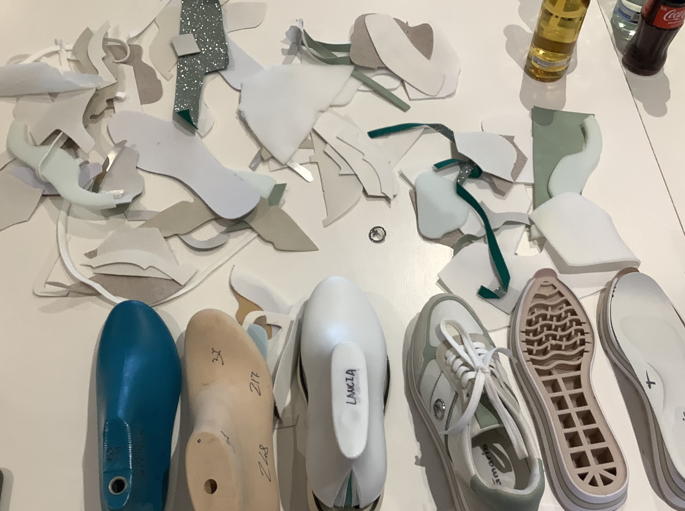
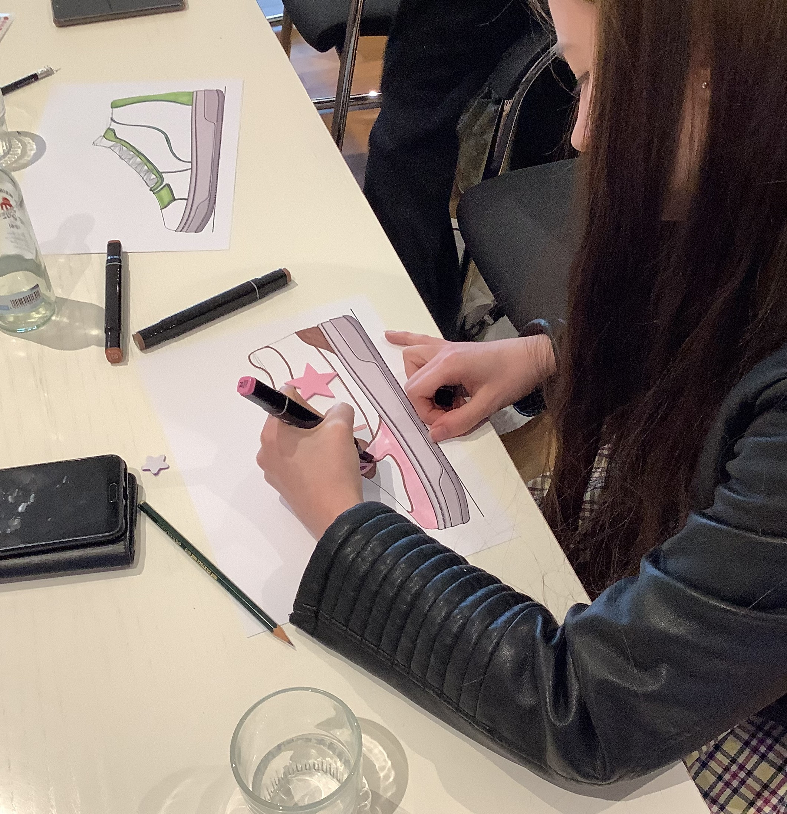
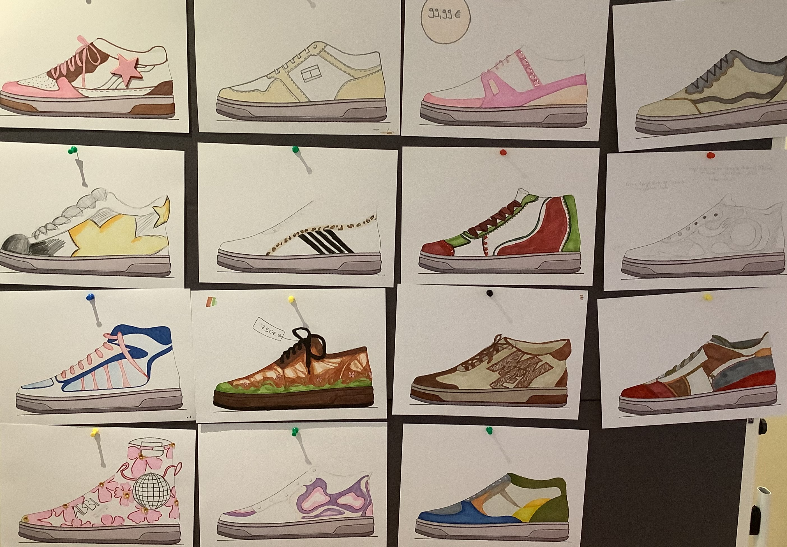
Die Ausbildungs- und Studienmöglichkeiten wurden aufgezeigt und hinterließen - gerade auch durch die globale Vernetzung (vielfältige Auslandspraktika und -aufenthalte) - den Eindruck attraktiver Perspektiven.
Daneben durften sich die Schüler*innen auch in der eigenen Kreation einzelner Sneaker ausprobieren und kamen zu individuellen und überzeugenden Lösungen.
Wir danken für diesen interessanten und motivierenden Einblick in wirklich angenehmer und anregender Atmosphäre!
@kunst
@2024-04-24
@2025-12-31
Exkursion zu Wortmann
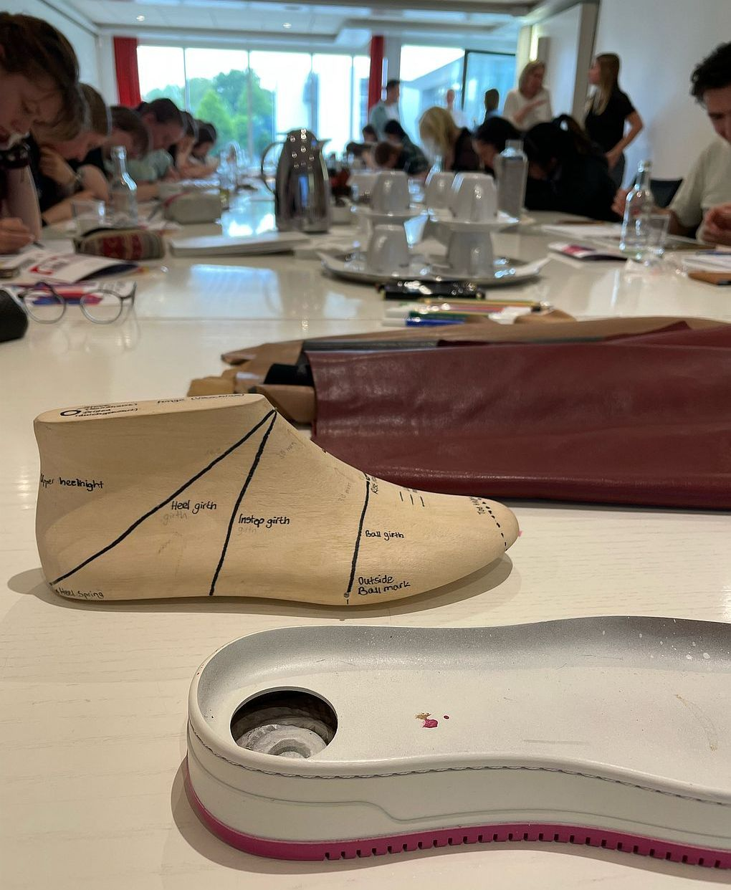
Am Dienstag, den 6. Juni 2023, hat der Kunst LK - in Begleitung von Frau Hecker und Frau Niehus-Berkemann - eine Exkursion zu der Firma Wortmann in Detmold unternommen, um einen Einblick in das Unternehmen im Allgemeinen zu bekommen, welche Tätigkeitsbereiche es umfasst und welche Ausbildungs- und Studienmöglichkeiten angeboten werden.
Nachdem wir von den Wortmann Mitarbeiter*innen Alex, Lisa, Nane und Lennart - im Unternehmen wird sich geduzt - empfangen wurden, haben uns die vier ein bisschen über das Unternehmen und ihre eigenen Aufgaben erzählt.
Alex - oder wie sie sich auch nennt die “Azubi-Mama” - informierte uns sowohl über allgemeine Daten des Unternehmens, wie zum Beispiel die Geschichte und die Entwicklung des Unternehmens oder die fünf Marken über die Wortmann verfügt, - als auch über die Arbeitsmoral und -atmosphäre.
Anschließend berichtete Lisa uns von dem Azubi-Leben und sprach dabei aus eigener Erfahrung, da sie sich selber noch mitten in der Ausbildung befindet. Abgesehen vom Kennenlernen des Unternehmens, dem Durchlaufen der verschiedenen Tätigkeitsbereiche und dem Dazugewinnen von Know-How bietet Wortmann für die Azubis auch außerbetriebliche Events, wie das “Azubi Bowlen”, um sich untereinander schon vor Beginn der Ausbildung kennenzulernen.
Nane und Lennart hatten ein kleines Quiz für uns vorbereitet, bei dem wir Fakten über das Unternehmen schätzen und unser Vorwissen zum Bereich Produktmarketing testen konnten. Daraufhin erzählten sie uns, welchen Prozess ein Schuh in der Produktion von der Designidee bis zur endgültigen Umsetzung und der Vermarktung durchläuft. Des Weiteren berichteten sie über ihre eigene Laufbahn und hoben dabei insbesondere den Auslandsaufenthalt hervor, den Wortmann während der Ausbildung bietet: In Portugal oder Asien können neue Eindrücke von der internationalen Produktion und Vermarktung gewonnen werden.
Schlussendlich hatten wir noch die Möglichkeit Fragen zu stellen und anschließend auch selber kreativ zu werden. Wir bekamen einen Zettel mit einer vorgegebenen Schuhsohle eines Sneakers und konnten anschließend unserer eigenen Fantasie freien Lauf lassen und den Schuh nach unserem Geschmack designen. Am Ende wurden alle entstandenen Schuhdesigns an eine Pinnwand gehangen und wir konnten staunen, in welche verschiedenen und individuellen Richtungen sich die Schuhe dank des Designs jedes einzelnen weiterentwickelt haben. Auch unsere Betreuer waren beeindruckt von unseren individuellen Umsetzungen und unserem Einfallsreichtum!
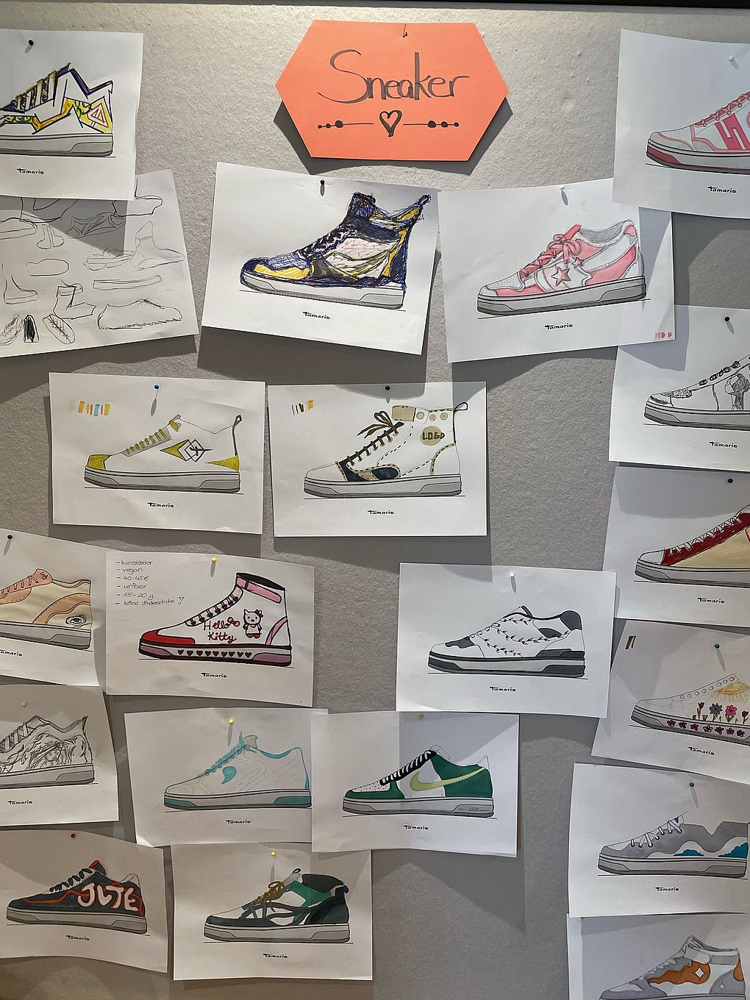
Schlussendlich lässt sich sagen, dass wir viele neue interessante Eindrücke über das Unternehmen und seine Aufgaben sammeln konnten und es vor allem mit seiner lockeren Atmosphäre und seiner Modernität punkten konnte! Und wer weiß, vielleicht konnte sich der ein oder andere so ja auch hinsichtlich zukünftiger Berufsmöglichkeiten inspirieren lassen…
2017
Der Produktmanager
LK Kunst besucht das Unternehmen Wortmann
Von Aila Amiryan
Bereits zum vierten Mal hatte ein Leistungskurs Kunst des Grabbe-Gymnasiums
die Ehre, die Koorperation mit Wortmann für die Berufsorientierung nutzen zu
können. Am 20. Juni durfte der Kurs unter der Leitung von Frau Niehus-Berkemann
in Begleitung von Frau Schalk das Unternehmen aus nächster Nähe kennenlernen.
Zunächst wurden wir von Frau Hohmann (Personalreferentin), Laura Sirp und
Cedric-Sebastian Stock (Produktmanagement) begrüßt und durch das
beeindruckende, moderne Gebäude in einen Vortragsraum geführt.
Dort wartete neben Snacks und Getränken ein interessanter, lebhafter und
lehrreicher Vortrag auf uns, der uns einen aufschlussreichen Einblick in das
Unternehmen und einzelne Berufsfelder ermöglichte. Besonders das
Produktmanagement stand dabei im Vordergrund und wir hatten die Chance, durch
praktisches Arbeiten und informative Videos ein besseres Gefühl für die
Aufgaben eines Produktmanagers zu erlangen. Auf unsere Fragen wurde stets
freundlich eingegangen und die interessante Vorstellung der
Ausbildungsmöglichkeiten bei Wortmann hat bei vielen Schülern Interesse
geweckt, sodass einige es definitiv in Erwägung ziehen, sich dort für ein
Studium oder eine Ausbildung zu bewerben.
Wir bedanken uns erneut herzlich im Namen des ganzen Kurses dafür, dass wir den
facettenreichen Alltag des Unternehmens kennenlernen durften und wünschen
den jungen Mitarbeitern weiterhin viel Erfolg auf ihrem weiteren Berufsweg!
:-)
Exkursionen
Picasso
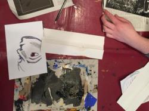
ausnahmslos: Das hat die Schüler des Leistungskurses Kunst Q1 offensichtlich sehr beeindruckt. Denn tatsächlich begegnet man dem Maler-Genie sonst nur im Rahmen von Epochen- oder Genre-Ausstellungen. In Münster gibt es aber ein reines Picasso-Museum, und deshalb konnte hier jeder seinen »inneren Picasso« entdecken. Dazu diente auch der Workshop mit einem Druck-Experiment zu Bildern der Ausstellung.

Das Grabbe kritzelt
Modell Adventskalender: Jeden Tag wartet bis Weihnachten eine optische Überraschung an den Wänden des Neubau-Foyers auf die Besucher. Grafische Gestaltung mit Aspekten von Rauminstallation und Aktion, erläutert Kunstlehrerin Beate Schalk. Aktuell ist ein interessant gezeichnetes Zebra.